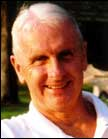

About Ralph Bennett
Ralph Kinney Bennett (1941–2024) lived a life defined by a deep curiosity about the world and an enduring love for his home. Born at Latrobe Hospital and raised in Rector, Pennsylvania, Ralph's roots in the Ligonier Valley ran deep. His mother, Virginia, was the editor of the Ligonier Echo in the 1970s, establishing a family legacy of storytelling that Ralph would carry forward and through the rest of his life.
Yet, no matter how far his assignments took him, he was always drawn back to Ligonier. Retiring in 2002, he returned home and immediately dedicated himself to the community's preservation. He joined the Ligonier Volunteer Hose Company #1 and served on the board of trustees for Fort Ligonier.
Combining his lifelong passion for military history with his exceptional talent as a writer, he authored "Ligonier 250: The Fort – The Town – The Valley" for the fort’s 250th anniversary in 2008. Often writing under the pseudonym John Ligonier, Ralph left behind an invaluable archive of historical research, ensuring the story of the valley he loved will never be forgotten.
Bios & Profiles
On the C-SPAN Networks
Ralph Bennett is a Senior Staff Editor for Washington, DC in the Reader's Digest with eight videos in the C-SPAN Video Library.
On the C-SPAN Networks
Ralph Bennett is a Senior Staff Editor for Washington, DC in the Reader's Digest with eight videos in the C-SPAN Video Library.

Contributing Editor, TCS
Ralph Kinney Bennett is a TCS Contributing Editor, an avid scholar of military history, and a writer shaped by the practical and the poetic.

Contributing Editor, TCS
Ralph Kinney Bennett is a TCS Contributing Editor, an avid scholar of military history, and a writer shaped by the practical and the poetic.
The Philadelphia Society
He was a writer, volunteer firefighter, and commentator whose work carried both wit and civic seriousness.
The Philadelphia Society
He was a writer, volunteer firefighter, and commentator whose work carried both wit and civic seriousness.